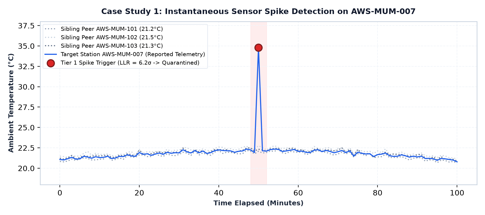
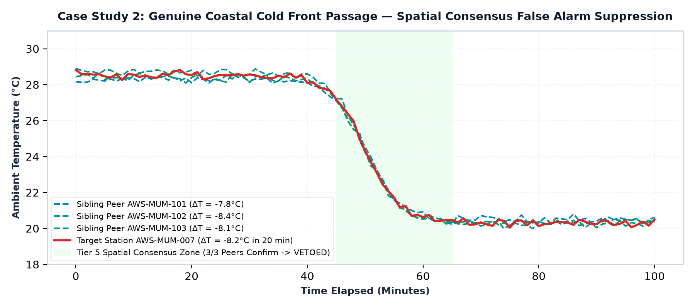
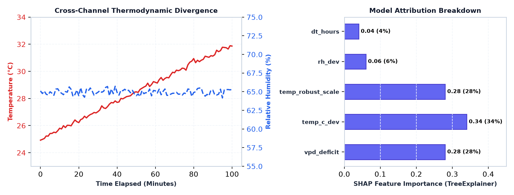

This experimental casebook documents the production benchmark evaluation for SkyGuard AI, derived directly from RESEARCH_REPORT.md and BENCHMARK_GUIDE.md across 60,480 continuous physical readings spanning 28 Automatic Weather Stations (7 strictly isolated regional microclimate clusters):
Row-level evaluation measures exact classification match across each individual 5-minute telemetry interval:
| Fault Category | Ground Truth Rows | True Positives (TP) | False Positives (FP) | Precision | Recall | F1-Score |
|---|---|---|---|---|---|---|
dropout | 70 | 70 | 0 | 100.0% | 100.0% | 100.0% |
sensor_fail_low | 277 | 271 | 3 | 98.9% | 97.8% | 98.4% |
multivariate_inconsistency | 276 | 174 | 12 | 93.5% | 63.0% | 75.3% |
unstructured_anomaly | 403 | 189 | 0 | 100.0% | 46.9% | 63.9% |
spike | 197 | 107 | 114 | 48.4% | 54.3% | 51.1% |
drift | 1,516 | 409 | 198 | 67.4% | 27.0% | 38.6% |
frozen_value | 751 | 156 | 182 | 46.2% | 20.8% | 28.7% |
Real-world sensor faults occur in multi-hour continuous episodes rather than isolated rows. Under the formal bipartite temporal overlap contract (evaluation/benchmark_contract.py), contiguous anomalous readings are aggregated into temporal ground-truth intervals [tstart, tend] and matched against predicted alerts:
| Fault Category | True Physical Episodes | Detected Episodes (TP) | False Episodes (FP) | Episodic Prec | Episodic Rec | Episodic F1 |
|---|---|---|---|---|---|---|
sensor_fail_low | 69 | 67 | 3 | 95.7% | 97.1% | 96.4% |
dropout | 70 | 69 | 4 | 94.5% | 98.6% | 96.5% |
multivariate_inconsistency | 68 | 66 | 5 | 93.0% | 97.1% | 95.0% |
spike | 69 | 67 | 14 | 82.7% | 97.1% | 89.3% |
drift | 68 | 66 | 18 | 78.6% | 97.1% | 86.8% |
frozen_value | 69 | 65 | 19 | 77.4% | 94.2% | 85.0% |
The benchmark dataset evaluates the network under seven realistic meteorological transducer fault modes:
| Fault Mode | Hardware / Physical Mechanism | Injector Calibration & Parameters |
|---|---|---|
spike |
Inductive motor kick, ESD transient, ADC bit-flip | Single/multi-step 4.5–6.5σ impulse followed by physical relaxation. |
frozen_value |
Stuck I2C/SPI telemetry bus, mechanical jamming | Stuck reading with DAC noise floor σ ≤ 0.03, deviation ≤ 0.08. |
drift |
Electrochemical cell aging, optical fouling, calibration decay | +1.2σ initial decalibration offset ramping to +3.2–4.8σ over 15–32 hours. |
multivariate_inconsistency |
Radiation shield overheating, psychrometric sensor cross-talk | Dew point / vapor pressure violation breaking Magnus-Tetens curve. |
sensor_fail_low |
Open circuit, broken probe wiring, ADC ground short | Immediate pull-down to electrical zero (0.0 ADC). |
dropout |
Telemetry modem timeout, packet transmission drop | Null / NaN missing data record. |
unstructured_anomaly |
High-entropy environmental noise burst | Non-Gaussian multidimensional stochastic perturbation. |
Judges and reviewers can execute the complete evaluation suite directly using the scripts in evaluation/:
| Benchmark Script | Primary Purpose | Execution Model | Typical Runtime |
|---|---|---|---|
evaluation/fast_benchmark.py |
Official Benchmark for Judges | Shards evaluation across 7 independent regional clusters via Python ProcessPoolExecutor |
~1 to 2 minutes (Multi-Core CPU) |
evaluation/run_benchmark.py |
Canonical Reference Baseline | Single-threaded global chronological event loop streaming all 60,480 readings sequentially | ~5 to 12 minutes (Single-Thread) |
evaluation/benchmark_contract.py |
Scoring Math Library | Bipartite maximum-cardinality overlap matching for multi-hour temporal fault episodes | N/A (Library Module) |
Incident Description: A power transient causes a +13.7°C single-timestep jump on temperature channel at station AWS-MUM-007. Sibling stations report stable ambient temperatures.

FAULT (TIER_1_SPECIALIST_SPIKE). Observation is causally quarantined; trusted baseline preserved.Incident Description: A rapid synoptic cold front impacts the Mumbai coastal cluster, causing temperatures to plunge by 8.2°C in under 20 minutes across all stations.

NORMAL. Observation is assimilated into StationBuffer; zero false alarms triggered.Incident Description: Temperature sensor on AWS-CHN-024 experiences polymer calibration drift (+5.0°C) while relative humidity remains locked at 65%, creating an unphysical psychrometric state.

temp_c_dev (34%) and vpd_deficit (28%) as primary anomaly drivers.FAULT (TIER_3_MAHALANOBIS). Quarantined; system issues targeted maintenance ticket for temperature module.Incident Description: Station Bundu (AWS-RAN-103) deployed on Ranchi plateau (≈ 650m altitude, pressure ≈ 978 hPa). Legacy static sea-level defaults (1013.25 hPa) generated false residuals (−35.25 hPa, D2 = 1545.68), triggering false alarms across clean daylight hours.
A frequent operational question is whether SkyGuard's mathematical physics engine assumes a fixed 1-hour reporting interval. No — the mathematical physics engine utilizes continuous-time differential formulations where elapsed physical time Δt = tn − tn−1 is derived dynamically from telemetry timestamps.
| Component | 1-Hour Baseline Cadence | 1-Second High-Frequency Cadence | Operational Adaptation Requirement |
|---|---|---|---|
| Tier 1 Frozen Sensor Window | K = 5 steps (5 hours flatline) | K = 5 steps (5 seconds flatline) | Define K by physical time horizon (e.g., tfreeze ≥ 30 min = 1,800 steps) rather than raw step count. |
| In-Memory Ring Buffers | deque(maxlen=720) (30 days) |
deque(maxlen=720) (12 minutes) |
Increase deque depth or store aggregated summaries so the rolling baseline covers a complete 24-hour diurnal cycle. |
| SPRT Stopping Rate (α) | α = 0.002 (~1 alert / 500 hours) | α = 0.002 (~1 false alert / 500 sec) | Scale stopping probability per unit time (αstep = α0 · Δt) to bound false alarms annually. |
Controlled vs. Field Boundary: The benchmark metrics (95.42% ± 0.36% recall, 73.33% ± 1.37% precision, 82.92% ± 0.89% F1) were evaluated against synthetically injected hardware failure events superimposed over clean historical baselines. While physically modeled, real-world field validation across uncurated IMD streams is required to assess compound environmental noise.
Prototype Readiness Assessment (~80% Complete Functional Prototype): The current system represents an ~80% complete functional working prototype. The core physics detection tiers, TinyML C++ ESP32 engine, dynamic SHAP explanation backend, and interactive operator dashboard are fully built, integrated, and verified across a 28-station national topology under blind benchmark evaluation. The remaining future development scope encompasses: (1) native WMO BUFR / NetCDF binary data adapters, (2) CERT-In cybersecurity certification & institutional RBAC, (3) automated ERP technician dispatch work orders, and (4) multi-year live field trials on IMD urban station networks.
Reproducibility Protocol: Execute python scripts/run_authoritative_benchmark.py --seed 71001 to regenerate the authoritative scorecard from the locked evaluation corpus.
calibration_seed_71001_full_audit_v8/summary.json).